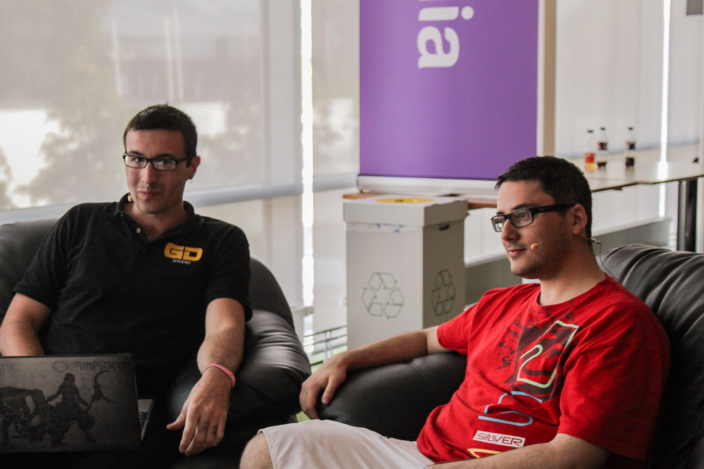

we keep the good part.
Cutsway edits gaming videos, streams, shorts and podcasts. Four hours of footage in, the twelve minutes worth watching out.
Book a callyour cut so far
0:00 / 4:12:00Circle the frames you would keep.
0 shotsThis is roughly what we do, a few hundred times per video, at the speed your upload schedule needs.
what comes off the sheet
gaming videos
Story, pacing, captions and sound design. Back in 48 hours.
shorts & reels
Ten vertical clips from one session, captioned for the first second. 24 hours.
stream VODs
Eight hours live becomes one highlight video and a shorts pack. 48 hours.
podcasts
Three mics, two cameras, one clean episode and six clips. 72 hours.
thumbnails
Three options with every edit, made alongside it. Alone, 8 hours.
one editor, your channel


Notes go on the exact frame. Two rounds of changes come with every edit, and you keep the same editor from one upload to the next.
fair questions

What do I send?
The whole raw pile. VODs, recordings, the clips you are not sure about. Choosing is our job.
Who picks what stays?
We do the first pass, you have the final word. Anything we cut can come back in a revision.
How fast, really?
Thumbnails in 8 hours, shorts in 24, videos in 48, podcasts in 72. Sample times, confirmed when you book.
Do you post it too?
If you want. Titles, captions and a schedule for YouTube, TikTok, Instagram and X.